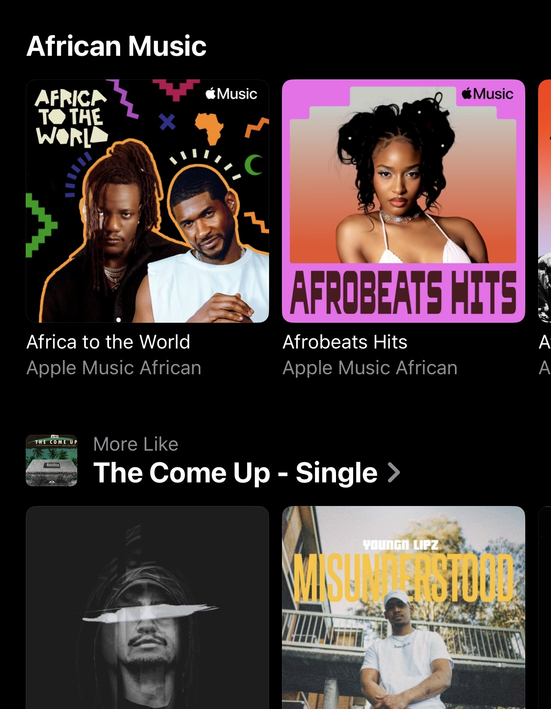
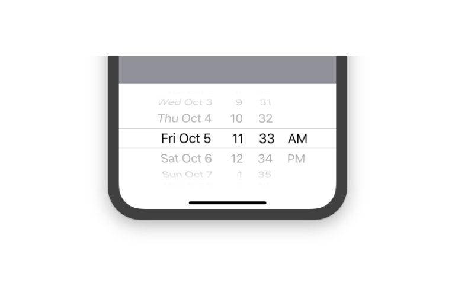
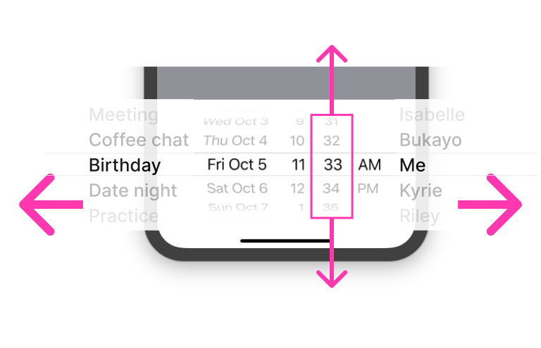
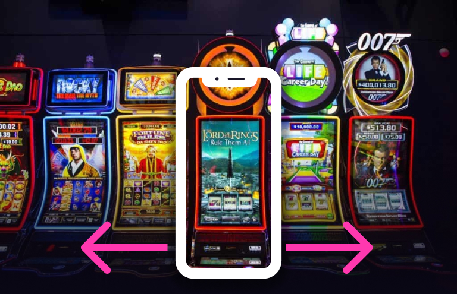
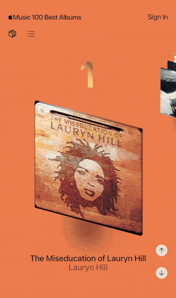
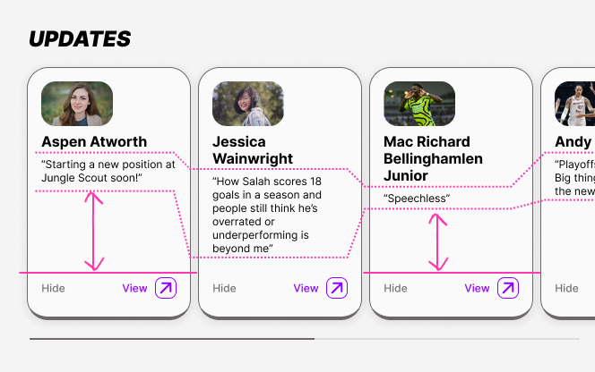
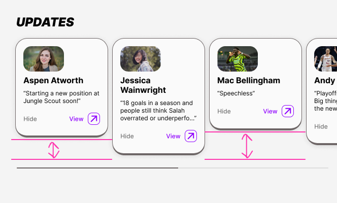
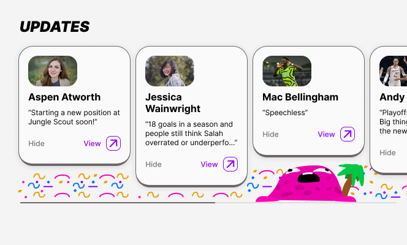
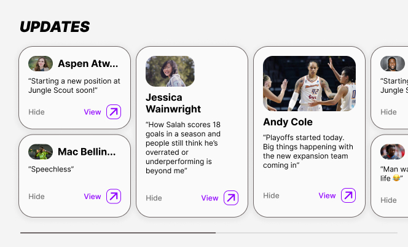
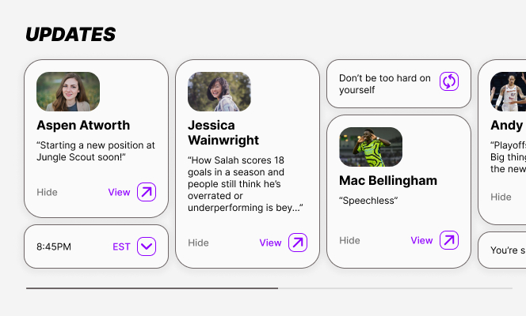

Discussing the challenges with carousels, and ways to overcome them.
June 12, 2024
What kind of carousels are we talking about?
Horizontal (traditional) carousels
Let’s start with horizontal

The carousel is the (im)perfect option to utilize when space is limited on a mobile device. It’s also super useful on desktop if you want to display multiple larger blocks of content or many different smaller sized options in one view without compromising on vertical space.
They are pretty straightforward: A bunch of cards, typically within the same category, are stacked side-by-side and continue off-screen horizontally. If a user wants to explore additional options within the category then they simply need to swipe or scroll left. The main benefit to this imo is that you can quickly scan many options within a section without taking up valuable vertical space on-screen.
Vertical carousels
We do technically see these "vertical carousels" every day in any default page where you need to scroll up or down to view additional content that is off-screen. I think something like a standard iOS date picker fits more closely to what I'm curious about though. It has multiple sets of values, stacked side-by-side, for you to explore vertically. In a similar way to the traditional carousel, you can see that each swipable/ scrollable component contains it's own distinct category of values.
If we progress this idea we can imagine utilizing both the vertical and horizontal axes for additional values. You can scroll up and down to find more options for each of the columns, or, if you want other types of content, you could swipe further to the side to find even more. In the example above, the additional off-screen items would be attendee/ author, and event type.
Now consider something like a digital slot machine. This somewhat resembles a social media platform like Tinder, Pinterest or Snap where you can slide left or right to view additional content that exists off-screen, but if there's something more you want to explore (related to what's on screen), you can also swipe up for additional info or related content.
Diagonal carousels

Generally I favour mobile native over web because of the constraints the iOS/ Android provide, but also how intuitive some of the interactions are.
That said, I do appreciate web-based work for how fun and weird it can be sometimes. I haven’t seen this kind of thing very often.
The thing(s) about carousels
Things to keep in mind
• Set limit to the amount of horizontal options that are included in the carousel. At the end of said limit consider providing a link to ALL options
• Provide a hint that there is more content either with a slider, arrows, pagination/ progress dots or a peeking card - some might argue for almost ALL said affordances
• Typically you want those cards to be the same width and height, but it’s not a hard rule. When you have inconsistent empty space on the same plane it can create visual misalignment and varied weights of the cards (more on this below)
• Alternatively, if we think about a collage, mosaic or gallery view, those are typically pretty well balanced and have varying sizes of cards or other elements.
Pros of the carousel/ swim lane
• Quickly scan categories AND sub options at the same time. It gives people a peek into various TYPES of content within the page (usually these carousels or swim lanes include the same type of content…)
• More content can be displayed within a viewport than otherwise would be
Cons of the carousel/ swim lane
• Sometimes people are less likely to venture too far into the extra options that are provided. There's also the argument that people are unlikely to scroll DOWN too far, so you have to decide on the lesser of two evil's. It's an imperfect solution, but the pros outweigh the cons with carousels imo - especially if your page has various groupings of content to consume.
• Carousels are typically limited to the same kind of content, and this can work against them.
A little more on that last point...
Imagine you have a carousel made up of the same types of cards (say an image stacked with a title and description), but some cards have more text than others. As an example, maybe some of the titles or descriptions are longer than others... In practice we usually try to write content that fits within a certain range, but even if they all contain the exact same character count, depending on the words used you will always end up with varying numbers of lines. Knowing this, how might we approach designing these in a more thoughtful way? And how do these look with the common practices used today? Let's take a gander...
How this looks in context
When creating the cards and their content for carousels it often requires you to cherry pick certain words and phrases in order to make everything as visually cohesive as possible. I don't think that's exactly sustainable or promoting of the best outcome for the design of these cards.
Some specific undesirables that arrise in today's implementation include cutting off strings of text, creating awkward gaps of white space and poor alignment of elements throughout the carousels.
Set text to truncate
Truncating helps to keep text components consistent, but it's not ideal because you don't get the entire message. Even when you set a max number of lines, unless you set all the content to max 1 line then you may still end up with gaps in your cards.
Use tallest card to set every card height
Similar to above, this can create unpleasant gaps of white space in cards with less content. It isn't the worst option, but the dead space created inside some cards can feel imprecise and a little distracting. Additionally, if we don't leverage max line numbers, and truncating then we create the potential for extra variance in text component size and alignment.
Use varied card heights
Having variable card heights just feels janky. It looks broken in the best case and unconsidered in the worst case.(IMO)
What are some alternative ways we can address undesirables?
Fill negative space underneath cards that don’t reach the bottom
We could add a pattern of sorts into the container background in an effort to separate the white space behind the cards from the background of the rest of the page. I feel that this is a little more distracting than we'd want and almost accentuates the misalignment of the cards.
Create size variants of the same card style
Adding various card sizes that display the same content might solve the negative space issue. This could work if we made the card heights to hug content vertically and added a rule for something like [if card is less than a specified height, then wrap]. It would be nice if you could shuffle content to fit gaps automatically, but I’m not sure if that’s possible technically. Worst case you could cherry pick cards that fit together when stacked on top of eachother and place them together manually.
Stack cards and add additional elements to fill empty vertical space
Create filler elements that require less content to fill empty gaps in the carousel. It might be a bit like adding widgets to your carousel, but it could be anything really; small images, fun icons, book recommendations, the time or date. The list goes on. This would require more thinking and planning than your average carousel maybe deserves. Not sure it’s worth the hassle, but I’d try it just for fun.
Wrapping up
In thinking about this more, I realized that the carousel options we typically deal with today are not THAT bad. In most cases I would opt to set a max number of lines and then truncate the text because it gives us a nice middle ground. That said, I don’t hate these new explorations.
• Adding various types of content is a useful option but potentially not worth the overhead in design and implementation.
• Stacking shorter cards together works as well, but you’d need a collection of full sized cards combined with cards less than half the height of the largest.
• Keeping cards with varied height and filling the gaps underneath the shorter cards calls more attention than I’d want, but it probably depends on the pattern/ graphics.
When we look at these kinds of things, often there is a straight forward approach to dealing with them. For me I want to play around with those straight forward approaches - mess around with the boundaries a bit. These questions come up in professional design exercises anyway so why not try to get ahead of them.
Until next time,
Nat